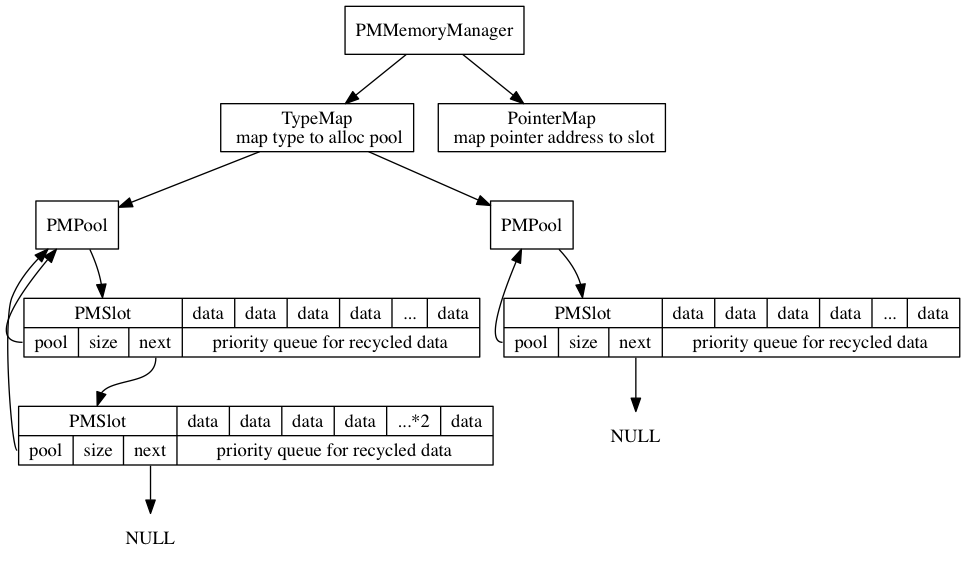
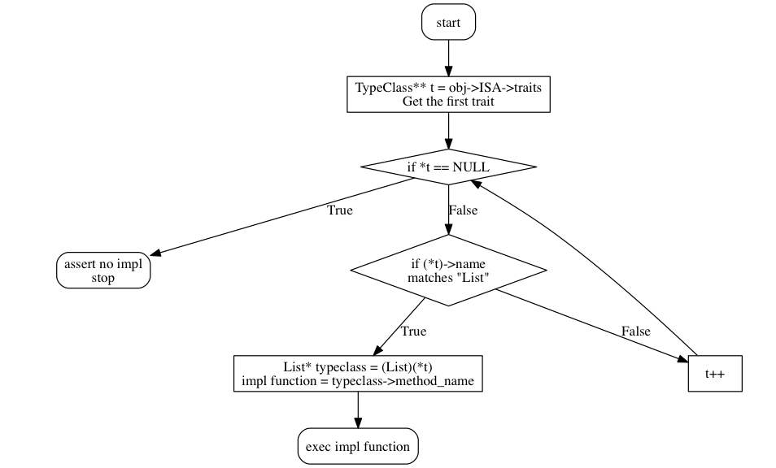

Created: 2016-09-03 Sat 10:47
Imagine we have a managed memory that we can serialize. There are three types of pointers that we need to handle:

Map<String, Long>)class Map<WritableComparable> { write(WritableComparable data, DataOutput out) { data.write(out); // write is defined in WritableComparable interface } }
data.write()bool coll_add(OPObject* collection, OPGeneric element); bool coll_isEmpty(OPObject* collection);
OPGeneric li_get(OPObject* list, size_t index); bool li_insert(OPObject* list, size_t index, OPGeneric element);
// just pseudo code struct OPLinkedList_KLASS { const char* const classname = "OPLinkedList"; const size_t size = 10; TypeClass** traits; // points to list of interface instances }
bool LinkedList_coll_add(OPObject* collection, OPGeneric element); bool LinkedList_coll_isEmpty(OPObject* collection); OPGeneric LinkedList_li_get(OPObject* list, size_t index); bool LinkedList_li_insert(OPObject* list, size_t index, OPGeneric element);
Collection typeclass(interface) object
bool LinkedList_coll_add(OPObject* collection, OPGeneric element); bool LinkedList_coll_isEmpty(OPObject* collection);
OPLinkedList_KLASS.traitsList typeclass.OPGeneric li_get(OPObject* obj, size_t index);
li_get on linked list takes O(N)li_get on array list takes O(1)
list->ISA, unique pointer for each classlist->ISA as a cache key to lookup function pointerfp(list, size_t index)__attribute__((constructor)): register class object to global map before main__attribute__(aligned(256)): align address so we can store some extra flags in the pointersx86_64
x86_64